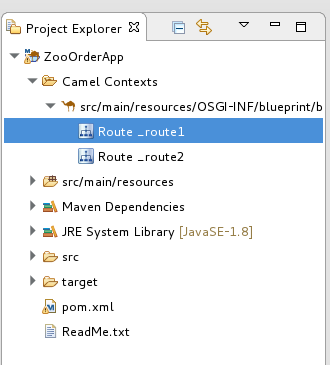
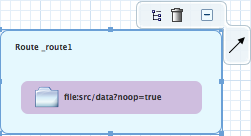

In some cases you made need to delete an entire route from your routing context. The Route
container's icon makes this easy to do. When you delete a route, all of the
nodes inside the Route container are also deleted, and the corresponding route element in the context file is removed.
![[Note]](imagesdb/note.png) | Note |
|---|---|
You can also remove a route using the Route container's context menu and selecting . |
![[Important]](imagesdb/important.png) | Important |
|---|---|
You cannot undo this operation. |
To delete a route:
If the routing context contains more than one route, first select the route you want to delete in Project Explorer view.
On the canvas, click the Route container's icon.
Click when asked if you are sure you want to delete this element.
The route is removed from the canvas, from the context file, and from Project Explorer.